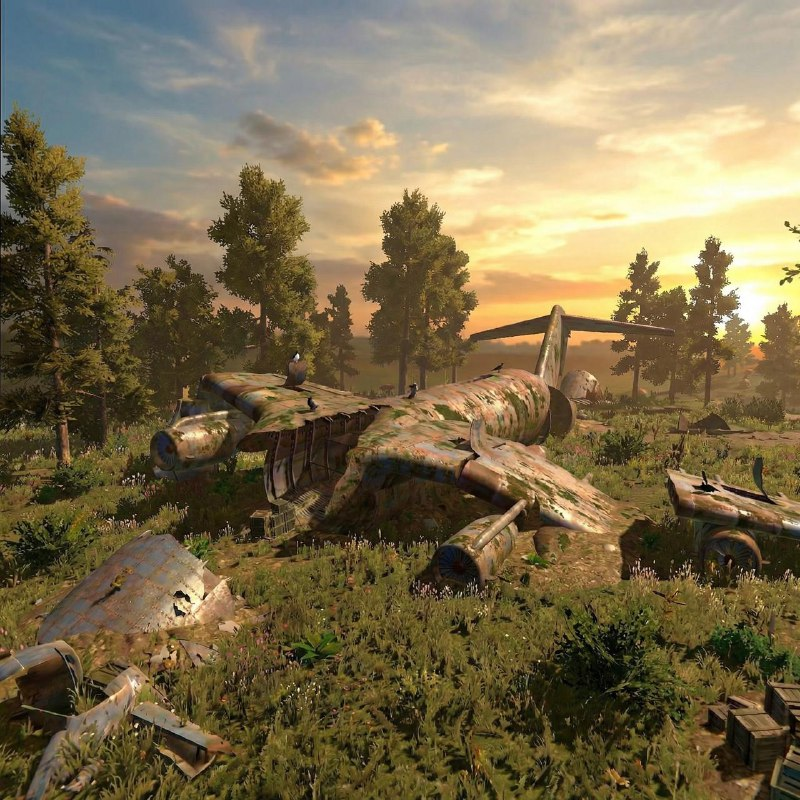
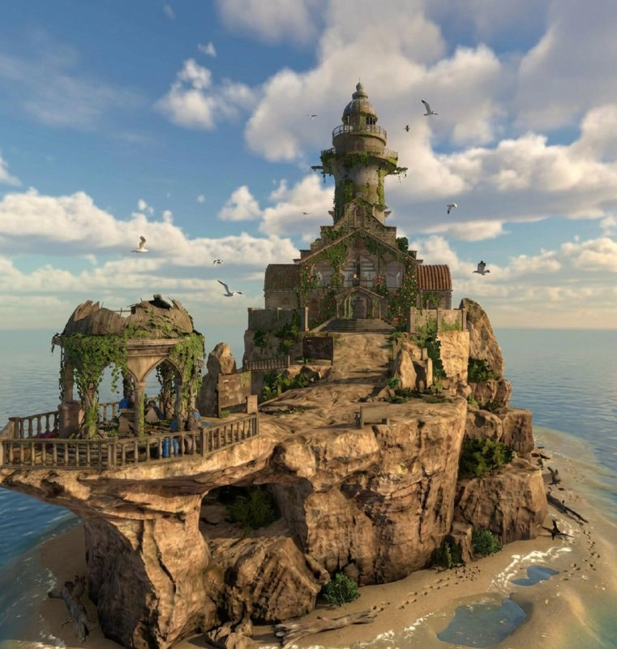

OXIDE WORLD
Lieux
Trouvez un lieu selon ses activités, ses gains et ses risques. La carte varie selon le serveur.
Station-serviceUn arrêt en bordure de route pour le butin et les voitures abandonnées.Détails →ParkingUn endroit pour trouver des voitures et recycler des objets.Détails →VilleUn espace avec des caisses en bois et une machine de recyclage.Détails →EntrepôtUn site de loot dense où les rencontres avec d'autres joueurs sont courantes.Détails →Usine abandonnée et roue de la chanceLa zone des roues a une zone de sécurité et un commerçant Caps signalé à proximité.Détails →BûcheronUn commerçant de ressources avec une zone de sécurité et une machine de recyclage.Détails →MineurUn point d'échange de ressources avec une zone de sécurité et une machine de recyclage.Détails →UsineUn site industriel centré sur des loot boxes métalliques spéciales.Détails →Foreuse de météoriteUn site ressource construit autour d'une foreuse et de trois salles de leviers.Détails →Base militaireUn site à haut risque avec des gardes armés, des défenses anti-aériennes et des parachutages radar.Détails → Gare ferroviaireUn grand site ferroviaire connu pour son butin précieux et contesté.Détails →Pylône électriqueUn point de déplacement surélevé relié à d'autres tours par des fils.Détails →
Gare ferroviaireUn grand site ferroviaire connu pour son butin précieux et contesté.Détails →Pylône électriqueUn point de déplacement surélevé relié à d'autres tours par des fils.Détails →

Avion écraséUn avion écrasé avec un butin précieux et une carte-clé de capitaine.Détails →
PhareUn site d'escalade offshore avec une mine cachée et un butin de haut niveau.Détails →Centrale nucléaireUn endroit où la radioprotection est importante.Détails →Gare ferroviaireUn grand site ferroviaire connu pour son butin précieux et contesté.Détails →Pylône électriqueUn point de déplacement surélevé relié à d'autres tours par des fils.Détails →